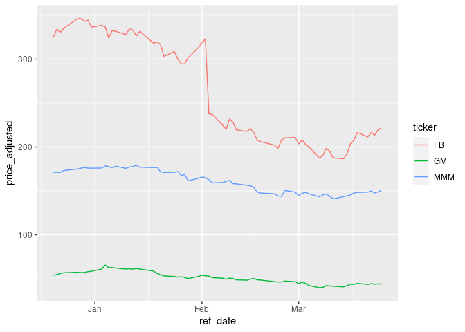

yfR is the second and backwards-incompatible version of
BatchGetSymbols.
In a nutshell, it provides access to daily stock prices from Yahoo Finance, a vast repository
with financial data around the globe. Moreover, yfR allows
large scale download of data using a local caching system and parallel
computing for speeding up the process.
Features
Fetchs daily/weekly/monthly/annual stock prices (and returns) from yahoo finance and returns a dataframe in the long format (stacked data);
A new feature called “collections” facilitates download of multiple tickers from a particular market/index. You can, for example, download data for all stocks in the SP500 index with a simple call to
yf_get_collection();A session-persistent smart cache system is available by default. This means that the data is saved locally and only missing portions are downloaded, if needed.
All dates are compared to a benchmark ticker such as SP500 and, whenever an individual asset does not have a sufficient number of dates, the software drops it from the output. This means you can choose to ignore tickers with high number of missing dates.
A customized function called
yf_convert_to_wide()can transform the long dataframe into a wide format (tickers as columns). The output is a list where each element is a different target variable (prices, returns, volumes).Parallel computing is available, speeding up the data importation process.
Differences from BatchGetSymbols
Package BatchgetSymbols was developed in 2016, with bad
choices from my part. As I learned more about R, my code became better
and easier to maintain. However, it is impossible to keep compatibility
with the changes I wanted to make, which is why I created a new
package.
Here are the main differences between yfR (new) and
BatchGetSymbols (old):
All input arguments are now formatted as “snake_case” and not “dot.case”. For example, the argument for the first date of data importation in
yfR::get_yf_dataisfirst_date, and notfirst.date(see arguments inBatchGetSymbols::BatchGetSymbols)All function have been renamed for a common API notation. For example,
BatchGetSymbols::BatchGetSymbolsis nowyfR::get_yf_data.The output is always a tibble with the price data (and not a list). If one wants the tibble with a summary of the importing process, it is available as an attribute of the output (see function
base::attributes)A new feature called “collection”, which allows for easy download of a collection of tickers. For example, you can download price data for all components of the SP500 by simply calling
yfR::yf_get_collection("SP500").New and prettier status messages using package
cli
Warnings
- Yahoo finance data is far from perfect or reliable, specially for individual stocks. In my experience, using it for research code with stock indices is fine and I can match it with other data sources. But, adjusted stock prices for individual assets is messy as stock events such as splits or dividends are not properly registered. I was never able to match it with other data sources, specially for long time periods with lots of corporate events. My advice is to never use the yahoo finance data of individual stocks in production (research papers or academic documents – thesis and dissertations).
Installation
# CRAN (not yet available)
#install.packages('yfR')
# Github (dev version)
devtools::install_github('msperlin/yfR')Examples
Fetching a single stock price
library(yfR)
#>
# set options for algorithm
my_ticker <- 'FB'
first_date <- Sys.Date() - 30
last_date <- Sys.Date()
# fetch data
df_yf <- yf_get(tickers = my_ticker,
first_date = first_date,
last_date = last_date)
#>
#> ── Running yfR for 1 stocks | 2022-02-26 --> 2022-03-28 (30 days) ──
#>
#> ℹ Downloading data for benchmark ticker ^GSPC
#> ℹ (1/1) Fetching data for FB
#> ! - not cached
#> ✓ - cache saved successfully
#> ✓ - got 20 valid rows (2022-02-28 --> 2022-03-25)
#> ✓ - got 100% of valid prices -- You got it msperlin!
#> ℹ Binding price data
# output is a tibble with data
head(df_yf)
#> # A tibble: 6 × 10
#> # Groups: ref_date, ticker [6]
#> ticker ref_date price_open price_high price_low price_close volume
#> <chr> <date> <dbl> <dbl> <dbl> <dbl> <dbl>
#> 1 FB 2022-02-28 208. 213. 207. 211. 34239800
#> 2 FB 2022-03-01 210. 212. 202. 203. 27094900
#> 3 FB 2022-03-02 205. 209. 202. 208. 29452100
#> 4 FB 2022-03-03 209. 209. 201. 203. 27263500
#> 5 FB 2022-03-04 202. 206. 199. 200. 32130900
#> 6 FB 2022-03-07 201. 201. 187. 187. 38560600
#> # … with 3 more variables: price_adjusted <dbl>, ret_adjusted_prices <dbl>,
#> # ret_closing_prices <dbl>Fetching many stock prices
library(yfR)
library(ggplot2)
my_ticker <- c('FB', 'GM', 'MMM')
first_date <- Sys.Date() - 100
last_date <- Sys.Date()
df_yf_multiple <- yf_get(tickers = my_ticker,
first_date = first_date,
last_date = last_date)
#>
#> ── Running yfR for 3 stocks | 2021-12-18 --> 2022-03-28 (100 days) ──
#>
#> ℹ Downloading data for benchmark ticker ^GSPC
#> ℹ (1/3) Fetching data for FB
#> ✓ - found cache file (2022-02-28 --> 2022-03-25)
#> ! - need new data (cache doesnt match query)
#> ✓ - got 67 valid rows (2021-12-20 --> 2022-03-25)
#> ✓ - got 100% of valid prices -- Got it!
#> ℹ (2/3) Fetching data for GM
#> ! - not cached
#> ✓ - cache saved successfully
#> ✓ - got 67 valid rows (2021-12-20 --> 2022-03-25)
#> ✓ - got 100% of valid prices -- Good job msperlin!
#> ℹ (3/3) Fetching data for MMM
#> ! - not cached
#> ✓ - cache saved successfully
#> ✓ - got 67 valid rows (2021-12-20 --> 2022-03-25)
#> ✓ - got 100% of valid prices -- Looking good!
#> ℹ Binding price data
p <- ggplot(df_yf_multiple, aes(x = ref_date, y = price_adjusted,
color = ticker)) +
geom_line()
p
Fetching collections of prices
Collections are just a bundle of tickers pre-organized in the
package. For example, collection SP500 represents the
current composition of the SP500 index.
library(yfR)
df_yf <- yf_get_collection("SP500")
head(df_yf)Fetching daily/weekly/monthly/yearly price data
library(yfR)
library(ggplot2)
library(dplyr)
#>
#> Attaching package: 'dplyr'
#> The following objects are masked from 'package:stats':
#>
#> filter, lag
#> The following objects are masked from 'package:base':
#>
#> intersect, setdiff, setequal, union
my_ticker <- 'GE'
first_date <- '2010-01-01'
last_date <- Sys.Date()
df_dailly <- yf_get(tickers = my_ticker,
first_date, last_date,
freq_data = 'daily') |>
mutate(freq = 'daily')
#>
#> ── Running yfR for 1 stocks | 2010-01-01 --> 2022-03-28 (4469 days) ──
#>
#> ℹ Downloading data for benchmark ticker ^GSPC
#> ℹ (1/1) Fetching data for GE
#> ! - not cached
#> ✓ - cache saved successfully
#> ✓ - got 3079 valid rows (2010-01-04 --> 2022-03-25)
#> ✓ - got 100% of valid prices -- Got it!
#> ℹ Binding price data
df_weekly <- yf_get(tickers = my_ticker,
first_date, last_date,
freq_data = 'weekly') |>
mutate(freq = 'weekly')
#>
#> ── Running yfR for 1 stocks | 2010-01-01 --> 2022-03-28 (4469 days) ──
#>
#> ℹ Downloading data for benchmark ticker ^GSPC
#> ℹ (1/1) Fetching data for GE
#> ✓ - found cache file (2010-01-04 --> 2022-03-25)
#> ✓ - got 3079 valid rows (2010-01-04 --> 2022-03-25)
#> ✓ - got 100% of valid prices -- Time for some tea?
#> ℹ Binding price data
df_monthly <- yf_get(tickers = my_ticker,
first_date, last_date,
freq_data = 'monthly') |>
mutate(freq = 'monthly')
#>
#> ── Running yfR for 1 stocks | 2010-01-01 --> 2022-03-28 (4469 days) ──
#>
#> ℹ Downloading data for benchmark ticker ^GSPC
#> ℹ (1/1) Fetching data for GE
#> ✓ - found cache file (2010-01-04 --> 2022-03-25)
#> ✓ - got 3079 valid rows (2010-01-04 --> 2022-03-25)
#> ✓ - got 100% of valid prices -- Well done msperlin!
#> ℹ Binding price data
df_yearly <- yf_get(tickers = my_ticker,
first_date, last_date,
freq_data = 'yearly') |>
mutate(freq = 'yearly')
#>
#> ── Running yfR for 1 stocks | 2010-01-01 --> 2022-03-28 (4469 days) ──
#>
#> ℹ Downloading data for benchmark ticker ^GSPC
#> ℹ (1/1) Fetching data for GE
#> ✓ - found cache file (2010-01-04 --> 2022-03-25)
#> ✓ - got 3079 valid rows (2010-01-04 --> 2022-03-25)
#> ✓ - got 100% of valid prices -- Good stuff!
#> ℹ Binding price data
df_allfreq <- bind_rows(
list(df_dailly, df_weekly, df_monthly, df_yearly)
) |>
mutate(freq = factor(freq,
levels = c('daily',
'weekly',
'monthly',
'yearly'))) # make sure the order in plot is right
p <- ggplot(df_allfreq, aes(x=ref_date, y = price_adjusted)) +
geom_point() + geom_line() + facet_grid(freq ~ ticker) +
theme_minimal() +
labs(x = '', y = 'Adjusted Prices')
print(p)
Changing format to wide
library(yfR)
library(ggplot2)
library(kableExtra)
#>
#> Attaching package: 'kableExtra'
#> The following object is masked from 'package:dplyr':
#>
#> group_rows
my_ticker <- c('FB', 'GM', 'MMM')
first_date <- Sys.Date() - 100
last_date <- Sys.Date()
df_yf_multiple <- yf_get(tickers = my_ticker,
first_date = first_date,
last_date = last_date)
#>
#> ── Running yfR for 3 stocks | 2021-12-18 --> 2022-03-28 (100 days) ──
#>
#> ℹ Downloading data for benchmark ticker ^GSPC
#> ℹ (1/3) Fetching data for FB
#> ✓ - found cache file (2021-12-20 --> 2022-03-25)
#> ✓ - got 67 valid rows (2021-12-20 --> 2022-03-25)
#> ✓ - got 100% of valid prices -- Got it!
#> ℹ (2/3) Fetching data for GM
#> ✓ - found cache file (2021-12-20 --> 2022-03-25)
#> ✓ - got 67 valid rows (2021-12-20 --> 2022-03-25)
#> ✓ - got 100% of valid prices -- Got it!
#> ℹ (3/3) Fetching data for MMM
#> ✓ - found cache file (2021-12-20 --> 2022-03-25)
#> ✓ - got 67 valid rows (2021-12-20 --> 2022-03-25)
#> ✓ - got 100% of valid prices -- Well done msperlin!
#> ℹ Binding price data
l_wide <- yf_converto_to_wide(df_yf_multiple)
prices_wide <- l_wide$price_adjusted
knitr::kable(head(prices_wide)) | ref_date | FB | GM | MMM |
|---|---|---|---|
| 2021-12-20 | 325.45 | 54.04 | 170.9872 |
| 2021-12-21 | 334.20 | 54.79 | 171.2645 |
| 2021-12-22 | 330.45 | 56.08 | 170.9872 |
| 2021-12-23 | 335.24 | 56.91 | 173.2948 |
| 2021-12-27 | 346.18 | 57.43 | 175.0083 |
| 2021-12-28 | 346.22 | 57.11 | 175.9393 |